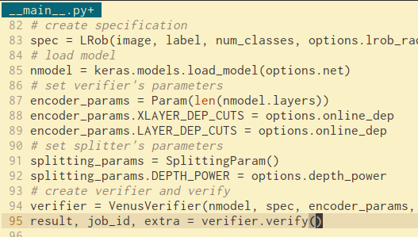
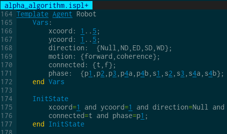

About me

I am a Research Fellow working within the Department of Computing,
Imperial College London. My research concerns the logic-based
verification of learning-enabled cyber-physical systems for the purposes of
the DARPA Assured
Autonomy Program.
Previously I worked on the formal verification of the communication protocols driving the H2020 FET project VISORSURF.
Before that I was a Research Fellow at the Department of Computing, Imperial College London, where I put forward parameterised verification techniques for robot swarms.
Prior to that I was a PhD student at the same department where I developed parameterised verification techniques for multiagent systems.
Previously I worked on the formal verification of the communication protocols driving the H2020 FET project VISORSURF.
Before that I was a Research Fellow at the Department of Computing, Imperial College London, where I put forward parameterised verification techniques for robot swarms.
Prior to that I was a PhD student at the same department where I developed parameterised verification techniques for multiagent systems.
Research
I am interested in safe Artificial Intelligence.
Towards this I develop formal methods to assess
the safety and robustness of
autonomous systems.
Typically autonomous systems are driven by learning-enabled components whose model of behaviour is extrapolated from a set of data instantiating the correct action to be taken given the state of the environment. Part of my research builds procedures to analyse the correctness of said components on previously unseen states of the environment.
Typically autonomous systems are driven by learning-enabled components whose model of behaviour is extrapolated from a set of data instantiating the correct action to be taken given the state of the environment. Part of my research builds procedures to analyse the correctness of said components on previously unseen states of the environment.
Often autonomous systems are composed of (arbitrarily large) groups of
agents that interact between them and their environment to either achieve a
global objective or realise a personal goal. Part of my work aims at
analysing the temporal and epistemic evolution of the
agents with the development of (parameterised) model checking
techniques. Additionally it targets the identification of
emergent behaviours the systems may display.
Publications
2022
Formal Verification of Neural Agents in Non-determenistic Environments
Michael Akintunde, Elena Botoeva, Panagiotis Kouvaros, Alessio
Lomuscio. Journal of Autonomous Agents and Multi-Agent Systems
( JAAMAS).
2021
OSIP: Tightened Bound Propagation for the Verification of ReLU Neural
Networks.
Vahid Hasemi, Panagiotis Kouvaros, Alessio Lomuscio. Proceedings
of the 19th Interational Conference on Software Engineering and
Formal Methods (SEFM21).
Formal Analysis of Neural Network-based Systems in the Aircraft Domain.
Panagiotis Kouvaros, Trent Kyono, Francesco Leofante, Alessio Lomuscio, Dragos Margineantu, Denis Osipychev, Yang Zheng.
Proceedings of
the 24th International Symposium on Formal Methods
(FM21).
Towards Scalable Complete Verification of ReLU Neural Networks via
Dependency-based Branching.
Panagiotis Kouvaros, Alessio Lomuscio.
Proceedings of
the 30th International Joint Conference on Artificial
Intelligence (IJCAI21).
Efficient Neural Network Verification via Layer-based Semidefinite
Relaxations and Linear Cuts.
Ben Batten, Panagiotis Kouvaros, Alessio Lomuscio, Yang Zheng.
Proceedings of
the 30th International Joint Conference on Artificial
Intelligence (IJCAI21).
2020
Verifying Strategic Abilities of Neural-symbolic Multi-agent Systems.
Michael Akintunde, Elena Botoeva, Panagiotis
Kouvaros, Alessio Lomuscio.
Proceedings of
the 17th International Conference on Principles of Knowledge
Representation and Reasoning (KR20).
Formal Verification of Neural Agents in Non-determenistic
Environments. Michael Akintunde, Elena Botoeva, Panagiotis
Kouvaros, Alessio Lomuscio.
Proceedings of
the 19th International Conference on Autonomous Agents and
Multi-Agent Systems (AAMAS20).
Efficient Verification
of ReLU-based Neural Networks via Dependency Analysis.
Elena Botoeva, Panagiotis Kouvaros, Jan Kronqvist, Alessio
Lomuscio, Ruth Misener. Proceedings of the 34th AAAI Conference
on Artificial Intelligence (AAAI20).
2019
Formal Verification of
Open Multi-Agent Systems. Panagiotis Kouvaros, Alessio
Lomuscio, Edoardo Pirovano, Hashan Punchihewa. Proceedings of
the 18th International Conference Autonomous Agents and
Multi-Agent Systems (AAMAS19), p.
179-187. IFAAMAS Press.
2018
Formal Verification of
a Programmable Hypersurface. Panagiotis Kouvaros, Dimitrios Kouzapas,
Anna Philippou, Julio Georgiou, Andreas Pitsillides. Proceedings of the
23rd International Conference on Formal Methods for Industrial Critical
Systems (FMICS18), p. 83-97. Springer.
Symbolic Synthesis of
Fault-Tolerance Ratios in Parameterised Multi-Agent Systems. Panagiotis
Kouvaros, Alessio Lomuscio, Edoardo Pirovano. Proceedings of the 27th
International Joint Conference on Artificial Intelligence
(IJCAI18), p. 324-330. AAAI Press.
2017
Towards the Formal Verification of Correctness and
Robustness of Robot Swarms (Invited Talk). Panagiotis Kouvaros, Alessio
Lomuscio. Proceedings of the 18th Italian Conference on Theoretical
Computer Science and the 32nd Italian Conference on Computational Logic
(ICTCS17).
Verifying
Fault-tolerance in Parameterised Multi-Agent Systems. Panagiotis
Kouvaros, Alessio Lomuscio. Proceedings of the 26th International Joint
Conference on Artificial Intelligence (IJCAI17),
p.288-294. AAAI Press.
Parameterised
Verification of Data-aware Multi-agent Systems. Francesco Belardinelli,
Panagiotis Kouvaros, Alessio Lomuscio. Proceedings of the 26th
International Joint Conference on Artificial Intelligence
(IJCAI17), p. 98-104. AAAI Press.
Parameterised
Verification of Infinite State Multi-Agent Systems via Predicate
Abstraction. Panagiotis Kouvaros, Alessio Lomuscio. Proceedings of
the 31st AAAI Conference on Artificial Intelligence
(AAAI17), p. 3013-3020. AAAI Press.
2016
Parameterised Model
Checking for Alternating-Time Temporal Logic. Panagiotis Kouvaros,
Alessio Lomuscio. Proceedings of the 22nd European Conference on
Artificial Intelligence (ECAI16), p. 1230-1238. IOS
Press.
Parameterised
Verification for Multi-Agent Systems. Panagiotis Kouvaros.
PhD Thesis. Imperial College London.
Formal Verification of
Opinion Formation in Swarms. Panagiotis Kouvaros, Alessio Lomuscio.
Proceedings of the 15th International Conference on Autonomous Agents
and Multi-Agent Systems (AAMAS16), p. 1200-1209.
IFAAMAS Press.
Verifying Security
Properties in Unbounded Multi-Agent Systems. Ioana Boureanu, Panagiotis
Kouvaros, Alessio Lomuscio. Proceedings of the 15th International
Conference on Autonomous Agents and Multi-Agent Systems
(AAMAS16), p.1209-1218. IFAAMAS Press.
Parameterised
Verification for Multi-Agent Systems. Panagiotis Kouvaros,
Alessio Lomuscio. Artificial Intelligence, 234,
p. 152-189. Elsevier.
2015
Verifying Emergent
Properties of Swarms.Panagiotis Kouvaros, Alessio Lomuscio.
Proceedings of the 24th International Joint Conference on Artificial
Intelligence (IJCAI15), p. 1083-1089 AAAI Press.
A Counter Abstraction
Technique for the Verification of Robot Swarms. Panagiotis Kouvaros,
Alessio Lomuscio. Proceedings of the 29th AAAI Conference on Artificial
Intelligence (AAAI15), p. 2081-2088. AAAI Press.
2013
A Cutoff Technique for
the Verification of Parameterised Interpreted Systems with Parameterised
Environments. Panagiotis Kouvaros, Alessio Lomuscio. Proceedings of
the 23th International Joint Conference on Artificial Intelligence
(IJCAI13), p. 2013-2019. AAAI Press.
Automatic Verification
of Parameterised Interleaved Multi-Agent Systems. Panagiotis Kouvaros,
Alessio Lomuscio. Proceedings of the 12th International Conference on
Autonomous Agents and Multi-Agent Systems (AAMAS13), p.
861-868. IFAAMAS Press.
Software
VENUS

Verification of
NeUral Systems
(VENUS) is a state-of-the-art sound and
complete verification toolkit for Relu-based feed-forward neural networks.
It can be used to check reachability and local adversarial robustness
properties.
VENUS implements a MILP-based verification method whereby it leverages dependency relations between the ReLU nodes to reduce the search space that needs to be considered during branch-and-bound. It additionally implements methods based on symbolic interval propagation and input domain splitting.
VENUS is available for download from here.
VENUS implements a MILP-based verification method whereby it leverages dependency relations between the ReLU nodes to reduce the search space that needs to be considered during branch-and-bound. It additionally implements methods based on symbolic interval propagation and input domain splitting.
VENUS is available for download from here.
MCMAS-P

MCMAS-P is a model checker for the verification of
multi-agent systems composed of arbitrarily many agents.
It takes as input multi-agent systems described in
Parameterised Interleaved Interpreted Systems (PIIS) and
implements cutoff and abstraction techniques to solve their
parameterised verification problem.
MCMAS-P's main procedure is based on an incomplete counter abstraction method. Given the procedure is in exponential space, MCMAS-P additionally implements more effective cutoff-based methods for a number of fragments of PIIS.
MCMAS-P is available for download from here.
MCMAS-P's main procedure is based on an incomplete counter abstraction method. Given the procedure is in exponential space, MCMAS-P additionally implements more effective cutoff-based methods for a number of fragments of PIIS.
MCMAS-P is available for download from here.
Service
- Reviewer for Artificial Intelligence Journal, Swarm Intelligence, Theoretical Computer Science.
- SPC Member for IJCAI 2021, AAAI 2020.
- PC Member for ICLR 2022, AAAI 2020, NeurIPS 2021, PAAMS 2021, AAAI 2021, NeurIPS 2020, AAMAS 2020, AAMAS 2019, AAAI 2019, AAMAS 2018, AAAI 2018, IJCAI 2017, AAAI 2017, ECAI 2016.
Teaching
- Guest Lecturer, Systems Verification, Department of Computing, Imperial College London, 2020.
- Guest Lecturer, Model-Based Techniques for Safe and Trusted AI, Department of Computing, Imperial College London, 2020.
- Lecturer, Data Structures and Algorithms, Department of Electrical and Computer Engineering, University of Cyprus, 2017-2018.
- Lecturer, Computer Science and Information Systems, Department of Computer Science, University of Cyprus, 2017-2018.
- Guest Lecturer, Systems Verification, Department of Computing, Imperial College London, 2017.
- Tutor, Systems Verification, Department of Computing, Imperial College London, 2016-2017.
- Tutor, Systems Verification, Department of Computing, Imperial College London, 2015-2016.
- Tutor, Modal and Temporal Logic, Department of Computing, Imperial College London, 2015-2016.
- Tutor, Modal and Temporal Logic, Department of Computing, Imperial College London, 2014-2015.